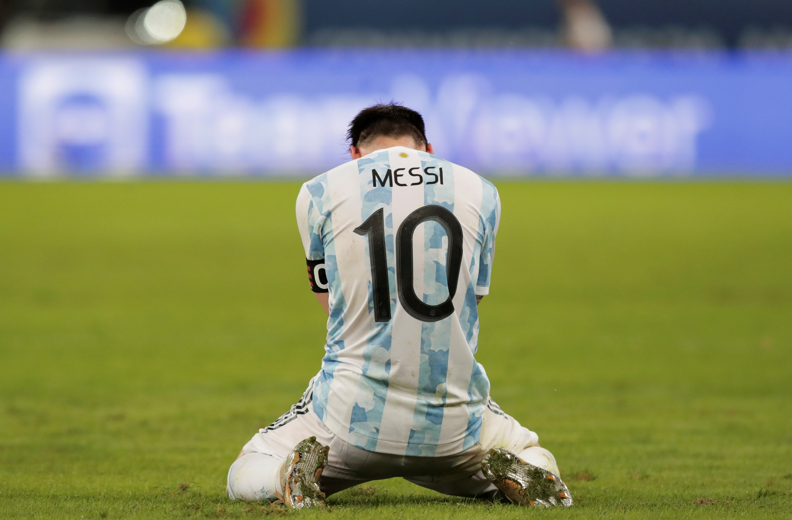

Lionel Andrés Messi Cuccittini nació el 24 de junio de 1987 en el Hospital Italiano Garibaldi en Rosario, Argentina. Es el tercer hijo de Jorge Horacio Messi y Celia María Cuccittini. Su familia tiene orígenes italianos, con su bisabuelo emigrando desde Recanati, Italia. Influido por su abuela Celia, comenzó su amor por el fútbol y dedicó sus goles a ella. Tiene dos hermanos mayores, Rodrigo y Matías, y una hermana menor, María Sol. También tiene primos futbolistas, Maximiliano y Emanuel Biancucchi. Su educación primaria fue en la escuela N° 66 "Gral. Las Heras". Desde los cuatro años, comenzó a jugar en el club Abanderado Grandoli en Rosario. Salvador Aparicio fue su primer entrenador. En 1994, se unió a las divisiones juveniles de Newell's Old Boys. A los ocho años, le detectó una deficiencia de hormona de crecimiento y recibió un tratamiento cubierto por su obra social y la empresa donde trabajaba su padre. En 1995, participó en un torneo no oficial con Central Córdoba. En 1999, el equipo italiano Como mostró interés en ficharlo, pero no se concretó debido a dificultades de mudanza. Al año siguiente, fue probado por River Plate en Buenos Aires, pero la incorporación nunca se materializó, a pesar del interés del encargado de las divisiones infantiles. Fue entonces cuando Messi fue reclutado por el FC Barcelona y comenzó a jugar en las categorías juveniles, donde su talento fue rápidamente evidente. Hizo su debut en el primer equipo en 2004 y pronto se convirtió en una fuerza dominante en el mundo del fútbol.

A lo largo de su tiempo en el Barcelona, Messi ganó numerosos títulos de La Liga, Copas del Rey y la Uefa Champions League. También recibió varios premios del Balón de Oro como el mejor jugador del mundo Messi estableció una serie de récords durante su tiempo en el Barcelona, incluido el récord de más goles en una temporada de La Liga. Su combinación de velocidad, agilidad, habilidad de dribbling y precisión de tiro le valió una reputación como uno de los mejores futbolistas de todos los tiempos. También formó parte del trío "MSN" junto con Luis Suárez y Neymar, que se convirtió en una de las delanteras más temidas y exitosas en la historia del fútbol. En 2021 fue un año agridulce para Lionel ya que fue el año en que por fin se cumplió un sueño tan deseo por él, el 10 de Julio de ese mismo año en el Maracaná fue cuando pudo obtener un título con la selección Argentina, la Copa América. Pero, poco tiempo despues tuvo que abandonar el club de sus sueños (Fc Barcelona) por problemas económicos. Fue entonces cuando fue a parar al club parisino (París Saint-Germain), en el cual si bien siempre deslumbró con su buen futbol no obtuvo muchos títulos y no fue bien valorado por la hinchada. En el año 2022 en Wembley messi obtendría su segundo título con la selección Argentina y a finales de ese mismo año, exactamente un 18 de diciembre, Messi se consagraría como campeón del mundo ganando por tanda de penales (4-2) a la selección Francesa y asi completar su palmarés con su selección. En 2023 Messi termina contrato con el París Saint-Germain y para descansar de la presión y disfrutar del futbol y tiempo con su familia Messi decide irse al Inter de Miami, equipo con el cual se consagró camepón de la Leagues Cup convirtiendose asi como el maximo gandor de títulos en la historia del futbol.

